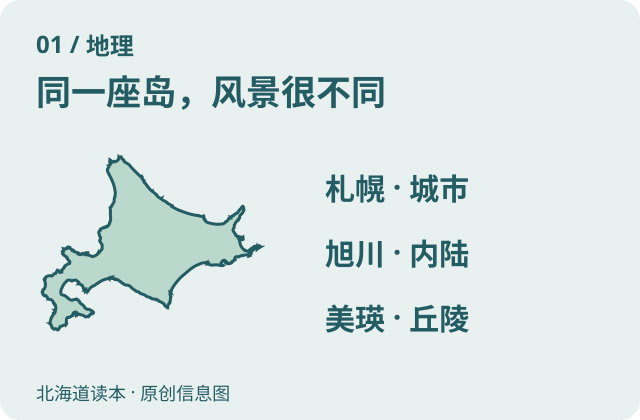
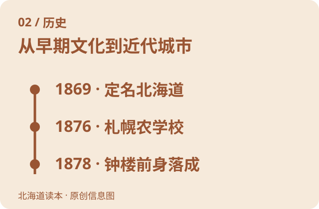
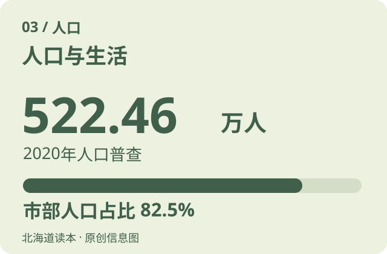
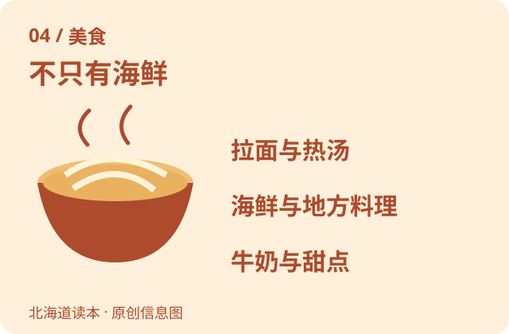
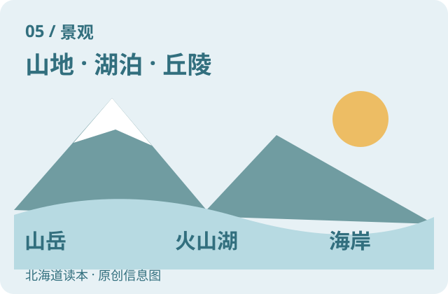
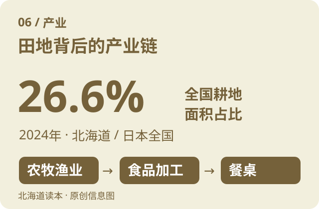

北海道读本 / HOKKAIDO
先读懂风景，再出发
七张主题信息图，认识这片土地的历史、人和生活。图下有详细说明，慢慢往下看就好。
信息图为原创示意，不是景点实拍；人口等数字均标明统计年份。

先认识这片北方大地
北海道位于日本列岛北部。海岸、山地、湖泊和农业平原在这里相遇，因此“去北海道”可能是城市漫步，也可能是看火山、森林或开阔农田。
你们这次的范围集中在札幌、旭川和美瑛：札幌是城市与购物的中心，旭川是内陆城市，美瑛位于旭川以南，以起伏丘陵和白金地区的水景闻名。新千岁机场是这次进出的门户。
北海道不是一个处处能顺路抵达的小景区。理解城市之间的方位，比一口气记很多景点更实用；首页动线图就是用来认识这层关系的。
图中为北海道本岛轮廓示意；右侧列出本次旅行的三个地区。
资料：北海道政府《数据册2026·地势》。核对：2026-10-15。

比“北海道”这个名字更久的历史
这片土地的历史远早于近代城市。北海道经历了绳文、续绳文、鄂霍次克与擦文等文化阶段，后来形成并发展了独特的阿伊努文化。
1869年，明治政府设立开拓使，将当时称作“虾夷地”的地区改称北海道。此后移民、农业技术、交通和行政设施推动近代城市发展，同时也深刻改变了阿伊努人的土地与生活。
1876年札幌农学校开校；1878年建成的演武场就是今天札幌钟楼的前身。看钟楼和红砖厅舍时，可以把它们理解为近代札幌形成过程中的实物线索，而不只是拍照背景。
时间线列举部分节点，并非北海道历史的起点或完整年表。
资料：北海道政府《数据册2026·历史年表》；北海道博物馆·北海道120万年物语。核对：2026-10-15。

地广，但居民更多集中在城市
2020年日本人口普查记录北海道人口为5,224,614人，约522.46万人。北海道政府2026年数据册的人口章节仍采用这次普查；这里明确使用2020年口径，不把它称为2026年即时人口。
同一普查中，82.5%的人口住在“市部”，约431万人；65岁及以上人口占32.2%。城市之外的乡镇和农田可能显得很空旷，但札幌等城市仍有密集街区与完善商业。
2015至2020年间，全道人口下降2.9%。理解人口分布，也能帮助理解为什么有些乡间景点需要提前考虑交通、营业时间和休息地点。
图中人口、城镇分布及年龄数据均为2020年国势调查口径；“市部”指行政上设市的地区。
资料：北海道政府《数据册2026·人口与生活》（引用2020年国势调查）。核对：2026-10-15。

从海、牧场和田地走上餐桌
海产、乳制品和农作物共同构成北海道的味道。寿司与海鲜之外，还能认识羊肉烤肉“成吉思汗”、鲑鱼料理、乳制甜点以及不同城市的拉面。
常见的三地拉面印象是札幌味噌、旭川酱油、函馆盐味。它们是地域代表风格，不表示每家店只做一种汤底；札幌的汤咖喱也是认识当地饮食的一种方式。
石狩锅以鲑鱼、蔬菜和味噌汤为特色；“锵锵烧”则把鲑鱼与蔬菜蒸烤。对这次有长辈和小朋友的家庭，可以先记住“海鲜、面汤、熟食、奶香甜点”四种方向，再按大家喜好选具体店。
这是美食文化介绍，不新增餐厅或替你们安排用餐。图为食物示意，不是实物照片。
资料：北海道官方旅游网站·美食；北海道官方旅游网站·食的乐趣；北海道官方旅游手册·三大拉面。核对：2026-10-15。

看山、看湖，也看人生活的地方
大雪山国立公园是北海道中部的山岳地带，最高峰旭岳海拔2,291米。它代表的是高山、峡谷、温泉和高山植物组成的景观。
支笏洞爷国立公园以火山、湖泊与温泉为特色；知床则把山地、森林、河川与海岸连接在一起。不同地区的景色不是同一种“北海道风景”的重复。
你们这次会看到另一种组合：札幌的建筑和夜景、旭山动物园的动物行为展示、美瑛的农业丘陵与青池、白须瀑布。12月的花田会进入冬季景观，青池也可能覆冰覆雪，不能按夏季照片期待现场。
图为景观类型示意。大雪山、支笏洞爷、知床用于认识北海道，不代表已加入你们的行程。
资料：北海道政府·北海道的国立公园；北海道官方旅游网站·景点。核对：2026-10-15。

风景背后，是生产与生活
2024年北海道耕地面积约113.8万公顷，占日本全国耕地面积的26.6%。稻作、旱田农业和奶业都是重要组成部分；小麦、马铃薯、甜菜、生乳等多种农畜产品的产量居日本前列。
农业与渔业也延伸出食品加工：牛奶变成乳制品，农产和海产进入加工、冷链与销售环节。北海道政府的工业资料把食品制造列为当地工业出货额最大的类别。
北海道的产业并不只有农场和旅游。还有石油制品、钢铁等制造业，千岁一带也在推进新一代半导体相关产业。去美瑛看到的田地首先是正在经营的农业空间，观景时应留在允许通行的位置。
26.6%指2024年耕地面积占比，不是农业产值或经济总量占比。半导体表述为发展方向，不表示已全面量产。
资料：北海道政府《数据册2026·农业》；北海道政府《数据册2026·工业》；北海道政府《数据册2026·经济》；北海道政府《数据册2026·水产业》。核对：2026-10-15。
认识阿伊努：仍在延续的文化
阿伊努民族是日本列岛北部周边、尤其北海道的原住民族。他们发展出与日语不同的语言，以及口传、舞蹈、刺绣、木雕等文化表达。
阿伊努文化中，对自然和万物的精神观念有重要地位。了解它时，不宜把不同地区的生活方式简化为一种固定服饰或装饰图案，也不要把当代阿伊努人只放在“古代历史”里。
北海道博物馆与白老的民族共生象征空间Upopoy，都是认识相关历史和文化的官方学习资源。这里先提供背景知识，不改变你们既定的札幌、旭川和美瑛行程。
本图使用书本符号，不仿制或宣称代表特定阿伊努传统纹样。
资料：Upopoy·关于阿伊努文化；北海道博物馆·阿伊努文化的世界。核对：2026-10-15。